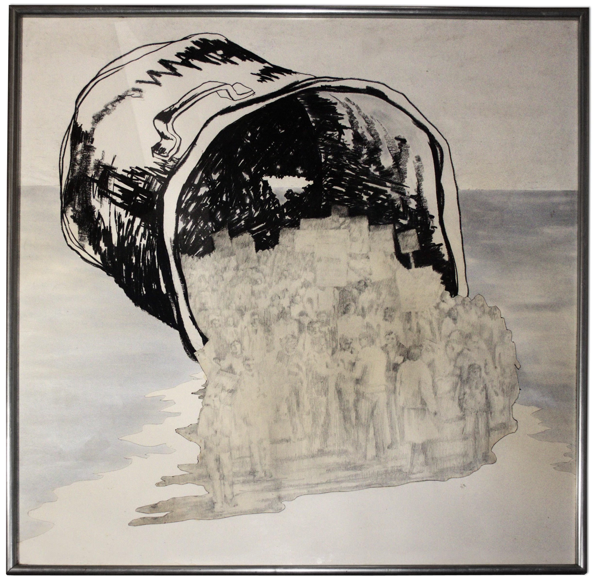
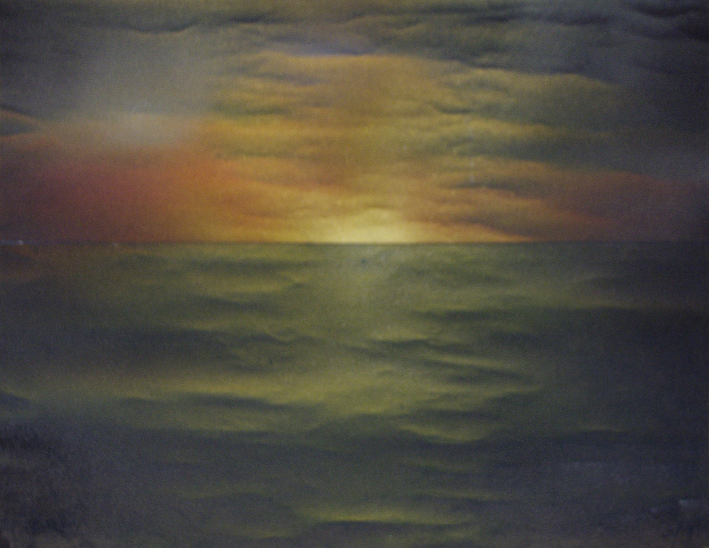

La propuesta visual de Rodolfo Aguerreberry invoca la interioridad de lo cotidiano a través de la mirada en la figura que interpela y reflexiona. Es su cuerpo presente, imagen icónica de esta muestra, que habla y reflexiona de sí mismo invocando la historia transcurrida
 Son sus huellas que subyacen y penetran en los trazos que resigna la sensible carbonilla. Quizás sus obras sin título, hablen por sí solas, porque nunca tuvieron, como su maestro, la pretensión de ser formalmente exhibidas. Su legado fue la calle. Fue en esa calle, dónde un día lo aprehendido forjó para siempre su historia